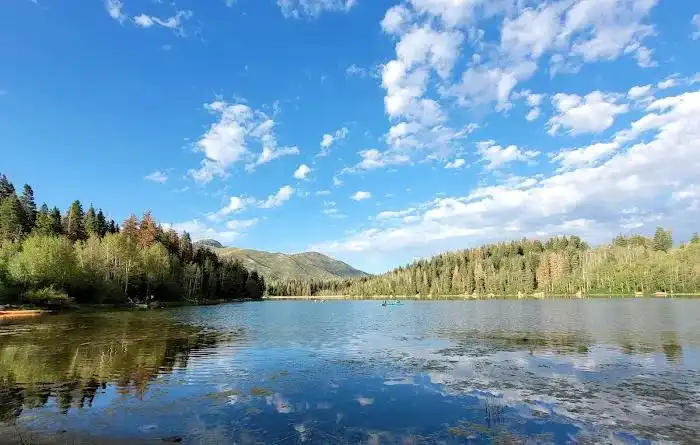

Maple Canyon
Maple Canyon is known for dramatic cliffs, colorful landscapes, and a unique canyon experience that stands out in Utah Valley.
- Beautiful rock formations
- Great for photography
- Excellent fall color views
Enjoy some of the most beautiful outdoor scenery near Salem Utah, from canyon views to lakes and mountain drives.


Maple Canyon is known for dramatic cliffs, colorful landscapes, and a unique canyon experience that stands out in Utah Valley.
Payson Lakes combines water, mountain scenery, and peaceful recreation opportunities in one of the area’s most attractive settings.
Nebo Loop is a scenic byway with mountain overlooks, winding roads, and stunning seasonal views that make it worth the drive.